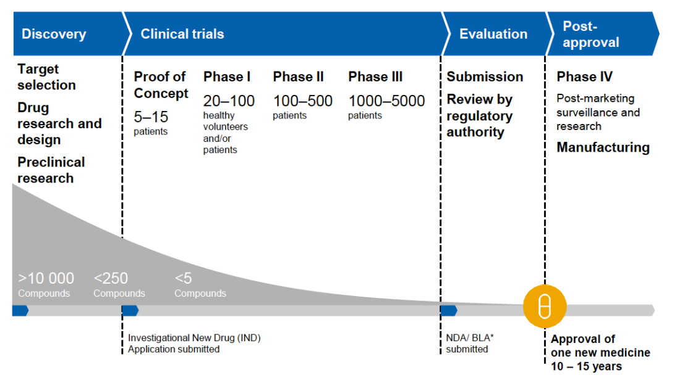
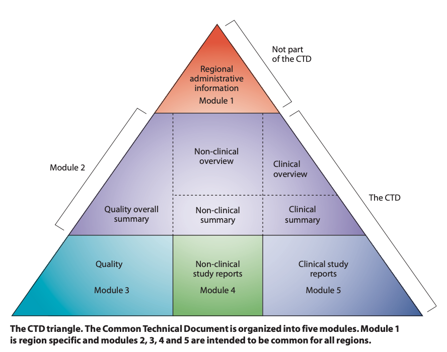
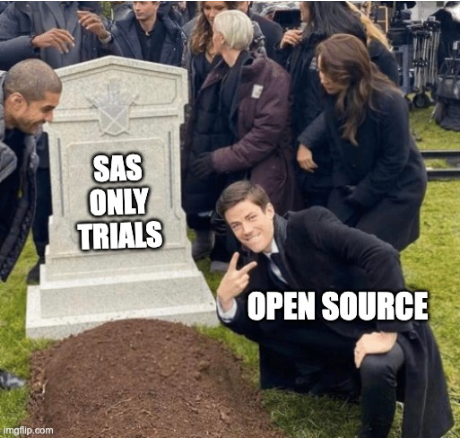

Open Source and the FDA
Introduction
- 8 years in oncology research
- 5 years in an internal CRO (-omic biomarkers)
- including validation and qualification

- Minneapolis-St Paul “city captain” for Bits-in-Bio
- R/Pharma and
{pharmaverse}contributor

- This talk will have more drugs / biologics focus than devices
- This talk will have more R information than Python
Getting to know the FDA
Organization / Submissions
- Top-level organization within Health and Human Services
- Sub-organizations
- Center for Drug Evaluation and Research (CDER) → drugs (and some biologics)
- Center for Biologics Evaluation and Research (CBER) → biologics (and some devices)
- Center for Devices and Radiological Health (CDRH) → devices (and therapeutic apps)
- Submission Types
- Device submissions based on risk - Class I / II / III
- Investigational exemption to run trials - IND (drug / biologic), IDE (device)
- Prescription drug - NDA (new drug application), ANDA (new generic)
- For new indication - sNDA or 505(b)(2)
- For non-prescription - OTC (over-the-counter) or “Rx-to-OTC” switch
- Biologics / Biosimilars - BLA (therapeutic biologic application)
- Class II / III devices - 510(k) (substantially equivalent) or PMA (Pre-Market Approval)
Drug Discovery and Development

History up to 1962
Biologics Control Act
Ensure purity and safety of serums, vaccines and similar products
Pure Food and Drugs Act
Prohibits sale of misbranded (strength, purity) and adulterated foods, drinks, and drugs
US vs Johnson
Supreme Court says PF&D Act doesn’t cover false therapeutic claims
Sherley Amendment
Prohibits false therapeutic claims with intent to defraud
FDA created
Originally, the Food, Drug, and Insecticide Administration (1927)
Food, Drug, and Cosmetic (FD&C) Act
Replaces the PF&D Act and Sherley Amendment (after 5 years debate)
Manufacturer has to show a drug is safe before it can be marketed (NDA submission)
Durham-Humphrey Amendment
Certain drugs labeled as prescription-only with refill rules
Kefauver-Harris Drug Amendments
Have to show a drug is safe AND effective for intended use
Evidence must consist of adequate, well-controlled studies (IND submission)
Submissions have no data standards, loose document structure, and reams of paper
1970s
- OTC safety and effectiveness rules - 1972
- Biologics moved from NIH to FDA - 1972
- Medical devices added to FD&C Act - 1976
- Drug Efficacy Study Implementation (DESI) - starts 1968, 1st report 1973
- Review efficacy for drugs approved from 1938-62 (based on safety only)
- Still - no data standards, no document structure, all paper
- SAS programming language - proprietary commercial
- Software validation (mostly) handled for you
1980s
- IRBs / Informed Consent rules - 1981
- Current organization structure - 80s
- Center for Drugs and Biologics created - 1982
- CDRH is created - 1984
- CDB split into CDER and CBER - 1987
- Food and Drug Act - moves FDA to HHS - 1988
- Orphan Drug Act, Anti-Tampering Act, Direct-to-Consumer Drug Ads - 1983
- DESI final report - 2225 effective, 1051 not effective, 167 pending (3443 total) - 1984
- Generics (ANDA submissions) - 1984
- Access to investigational drugs / accelerated approvals - 1987+
- FDA rules on format for a submission (12 sections) - still mostly paper
- SAS XPT (v5) data file format created - 1989
1990s
- Prescription Drug User Fee Act - 1992
- Trials should include women - 1993
- Post-marketing safety (MedWatch) - 1993
- Food and Drug Modernization Act - 1997
- Trials to analyze by age, gender, and race - Demographics Rule - 1998
- FDA clinical trial registry - ClinicalTrials.gov - 1999
- Submissions move from paper to electronic (PDFs and more)
- Submissions include code, data (spreadsheets, databases) - PCs sent to FDA
- SAS XPT (v5) is required for data - 1999
- FDA is founding member of ICH (1990) and CDISC (2000) - STANDARDS-ish!
ICH - www.ich.org
- The “United Nations” for regulatory agencies (RA)
- Officially the “International Council for Harmonization of Technical Requirements for Pharmaceuticals for Human Use”
- Guidelines
- Identified with pattern <A><N> - with potential revisions (R<N>)
- Q for Quality, S for Safety, E for Efficacy, M for Multi-Disciplinary
- Each RA implements these as regulations
- For FDA, this is Title 21 of the Code of Federal Regulations (CFR)
- 21 CFR is all the regulations of the FDA, DEA, and ONDCP
- Divided into chapters and sub-chapters (FDA is Chapter I, Subchapters A through L)
- Divided into parts assigned to sub-chapters (FDA is parts 1-1299)
- eg. Part 11 covers computer system / software validation
- FDA provides a lot more documentation than just the 21 CFR regulations
ICH Guidelines (highlights)
Quality
Q7 Good Manufacturing Practice
Q8 Pharmaceutical Development
Q9 Quality Risk Mgmt
Q10 Pharmaceutical Quality System
Efficacy
E3 Clinical Study Reports
E6 Good Clinical Practice
E8 Trial Design
E9 Statistics for Clinical Trials
Multi-Disciplinary
M1 MedDRA Terminology
M2 Electronic Standards
M4 Common Technical Document (CTD)
M5 WHODrug Terminology
M8 Electronic CTD (eCTD)
M10 Bioanalytical Method Validation
M11 Clinical electronic Structured Harmonized Protocol (CeSHarP)
Safety
S1 Carcinogenicity
S4 Toxicity
S7 Pharmacology Studies
CTDs, eCTDs, and CSRs

- 5 Modules
- M1 Administrative (RA-specific)
- M2 Overviews and Summaries
- M3 Quality
- M4 Non-clinical study reports
- M5 Clinical study reports
- eCTD is a digital version of this (folder / file structure)
- eCTD v4 is just now accepted by FDA
- CSR is a clinical study report and is the contents of “m5”
CDISC - www.cdisc.org
- Global non-profit setting data standards for clinical trials
- Foundational standards are all XML-based
- Most specifications are “guidelines” and come with implementation guides
- Some guides are based on therapeutic area
- Like ICH, also have their own controlled terminologies / biomedical concepts
- Runs various initiatives - digital technologies, 360i (“AI”)
- Runs COSA - CDISC Open-Source Alliance
- Works with other standards organizations - FHIR, OHDSI
- “Define” the main data standards to be included in the CSR
- Different RAs have different rules on use of CDISC
- Even for FDA - CDER, CBER, and CDRH have different rules
CDISC standards
- USDM - Unified Study Definitions Model
- CDASH (IG) - Clinical Data Acquisition Model
- Model for capturing data from a Clinical Report Form (CRF)
- SDTM (SENDIG - non-clinical, SDTMIG - clinical) - Study Data Tabulation Model
- Model to organize and format data from trials
- ADaM (IG) - Analysis Data Model
- Model for analysis-ready datasets
- Analysis Results Standard - Model (ARM) and Dataset (ARD)
- Model (and meta-model) for statistical output from ADaM data
- This can be input data for Tables, Listings, and Figures (TLFs)
- Data flow
- raw/CRF → EDC → SDTM data → ADaM data → ARD → TLFs for PDFs
- Metadata for all of this (traceability, quality) - common file is define.xml
The Shift to Open Source
SAS (closed) to Open Source
- Most trials have a data flow - CRF → SDTM → ADaM → TLFs / PDF
- Trial data (versioned / tagged) - based on CDISC, typically SAS data files (
sas7bdat) - Trial code (versioned / tagged) - raw to SDTM to ADaM to TLFs is all SAS code
- CSR files (in the eCTD) are SAS code and SAS XPT (v5) data files
- FDA runs your SAS code on Windows (their environment)
- R (v3 in 2015, v4 in 2020) and Python (v3 in 2008) can technically do this
- Most folks are now learning R and Python
- Can we move off of SAS?
- Internal data can be anything - need versioning and tagging
- 21 CFR Part 11 - need to validate core statistics and packages used
- FDA needs to be able to run what we send (and code transfer is text-only)
- SAS XPT (v5) is still required for data transfer - but we can make that with R / Python
R Consortium
- The R Consortium does all things R
- Projects - RLadies+, R-Universe, and DBI
- Events - R/Medicine, UseR!, LatinR, etc.
- Grants - Twice-annual grant submissions - Apr /Sep
- Lots of working groups - many related to clinical trials
{nlmixr2}package for PK/PD calculations- R Tables for Regulatory Submission (RTRS)
- Submissions
- R Validation Hub
- Submissions group runs pilots with FDA to prove this out
- Started in 2021 - 7 pilots defined so far (5 are completed)
- R Validation Hub a risk-based approach to R / package validation
- Started in 2018
PHUSE
- PHUSE - Global Healthcare Data Science Community
- “Get-Stuff-Done” organization that works with CDISC
- Funding from RAs and Pharmas - started 2004
- Lots of working groups - everyone is involved
- CAMIS - Comparing Analysis Method Implementations in Software
- Part of Data Visualization and OS Tech working group
- Prove out core stats in SAS, R, and Python
- pharmaverse working group
- Started as it’s own thing and then became a PHUSE working group
- CAMIS - Comparing Analysis Method Implementations in Software
- Main event is “Connect” (US, EU, APAC) and hackathons
{pharmaverse} and */Pharma
- R packages - CSR data (SDTM/ADaM/ARS/TLFs), submissions, and validation
- Community - slack, blog, examples, YouTube videos
- Organized around 4 pillars - council members from pharma
- OS Software Solutions, Community, PHUSE WG, Future Focus
- R/Pharma is a related group for events and hosts
- GenAI virtual conference (Jun)
- In-person “Summit” day prior to posit::conf (Sep)
- R/Pharma virtual conference (Oct)
- R/Pharma Hangouts (monthly)
- Diversity Alliance Hackathon
- Open Source in Pharma is a non-profit with similar aim as R/Pharma for ALL languages
{pharmaverse} Packages
- Packages
- SDTM packages for converting CRF/raw data to SDTM
- ADaM packages for converting SDTM data to ADaM
- TLGs packages for creating ARM/ARD data, TLFs, interactive apps, etc.
- eSub packages for creating data files needed for eCTD submissions
- Metadata packages for meta-data driven study data flows
- Utility packages for architectural concerns (logging, diffs)
- Developers packages for validation, CI/CD, data
- Learning Resources
- Full examples website you can run on Posit Cloud or locally
- See Navitas webinar for more on this
- 30 days of pharmaverse
Where we at?
- Submissions
- Pilots - execute R, custom packages,
{shiny}apps,{renv}, podman, WebAssembly, dataset-json - FDA regulatory changes on using
.zipfiles for custom R packages
- Pilots - execute R, custom packages,
- Validation
- ICH / FDA / CDISC work
- M11 and USDM, automation / “AI” / 360i, FDA “real-time” trials, dataset-json
- Successes
- Novo Nordisk committed all new trials to R - first R-based submission to FDA
- Roche webinar on their first R-based submission to FDA, EMA, and NMPA
- “Phil’s list”
Questions
The future of therapeutic development is open source
THANK YOU!!

OSN 2026